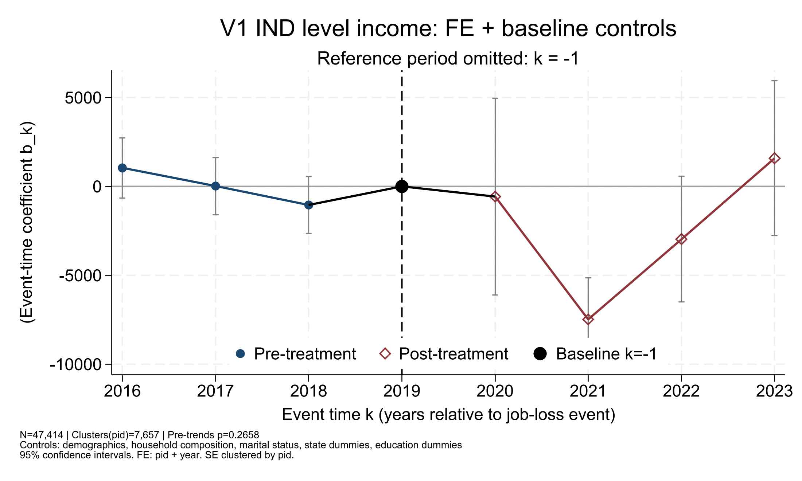
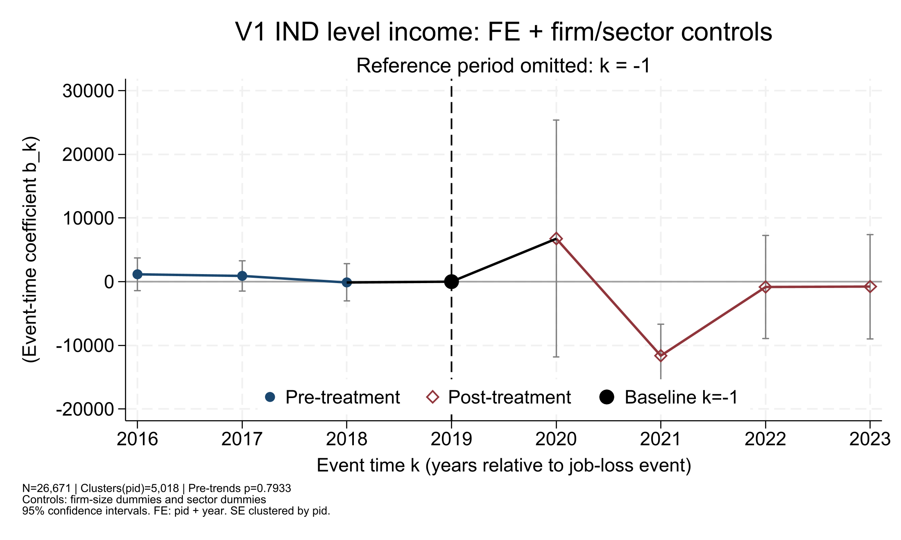
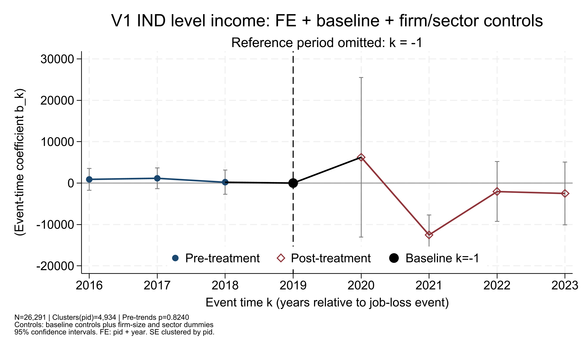
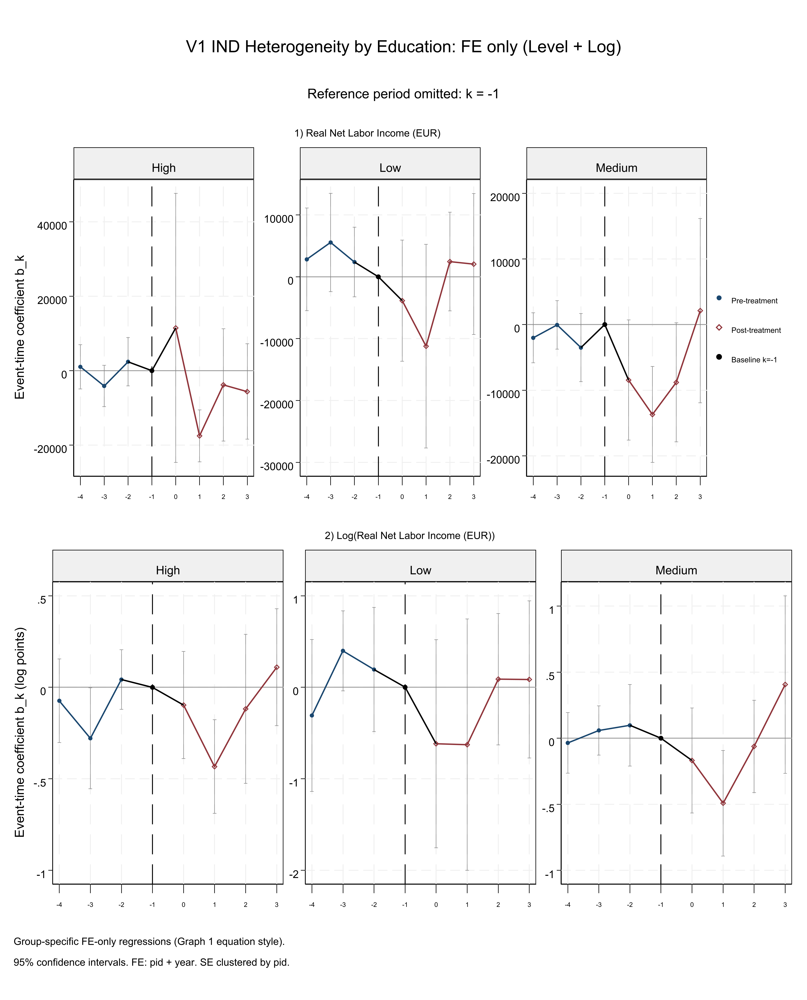
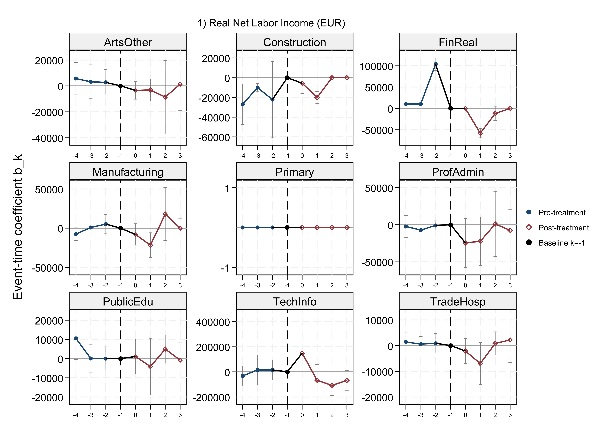
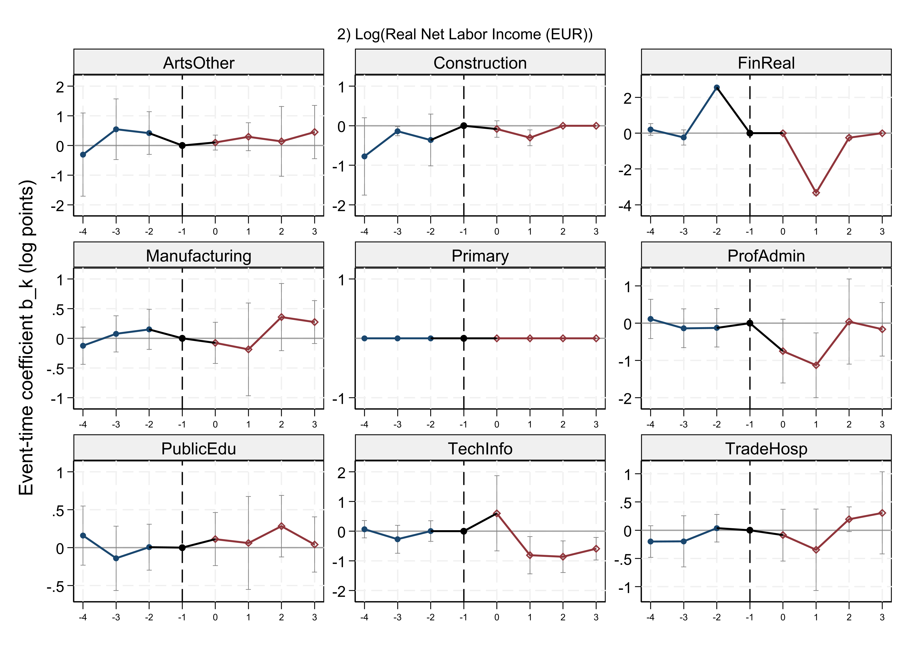

Main Effects
General specification
$$ Y_{it}=\sum_{k\in\{-4,-3,-2,0,1,2,3\}}\beta_k D^{(k)}_{it}+\alpha_i+\lambda_t+X_{it}'\gamma+\varepsilon_{it},\quad k=-1\text{ omitted.} $$
$Y_{it}$ is real net labor income (EUR). $X_{it}$ varies by specification.
Graph 2. FE + baseline controls
Graph 3. FE + firm/sector controls
Graph 4. FE + full controls
Desagregated Effects
General heterogeneity specification
$$ Y_{it}=\sum_{k\in\{-4,-3,-2,0,1,2,3\}}\beta_{k,g}D^{(k)}_{it}+\alpha_i+\lambda_t+\varepsilon_{it},\quad i\in g,\;k=-1\text{ omitted.} $$
$$ Y_{it}=\sum_g\sum_{k\neq -1}\theta_{k,g}(D^{(k)}_{it}\times \mathbf{1}\{i\in g\})+\alpha_i+\lambda_t+\varepsilon_{it} $$
Education groups
Low: casmin_low_i=1, Medium: casmin_medium_i=1, High: casmin_high_i=1.
Sector groups
Primary, Manufacturing, Construction, TradeHosp, TechInfo, FinReal, ProfAdmin, PublicEdu, ArtsOther (NACE2 aggregates).
Region groups
East: region_east_i=1, West: region_west_i=1.
By Education (Level + Log)
By Sector (Level)
By Sector (Log)
By Region (East vs West, Level + Log)